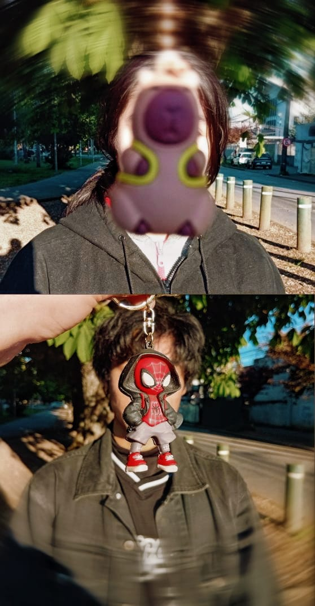
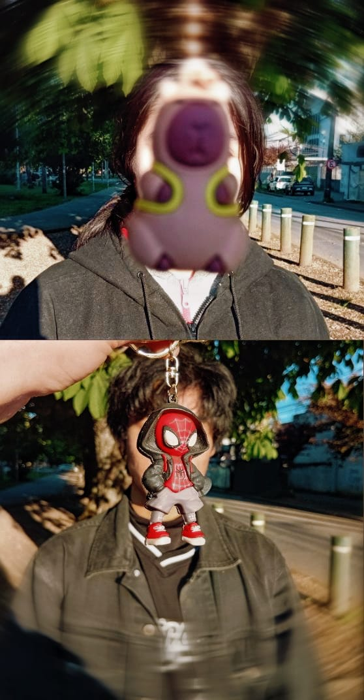

Razón 101
La única razón para dejarte
Llegaste hasta aquí creyendo
que el amor podía tener una salida,
una puerta trasera,
un final ordenado.
Pero yo no aprendí a amarte así.
Yo aprendí a quedarme.
A elegir incluso cuando el día pesa.
A sostener incluso cuando tiemblo.
A volver, siempre.
Nunca dejaría a mi bebé.
No porque todo sea perfecto,
sino porque incluso en lo imperfecto
te sigo eligiendo.
Te amo en los días suaves
y en los días ásperos.
Te amo cuando sonríes
y cuando el mundo te duele.
Te amo cuando callas,
cuando lloras,
cuando no sabes qué decir.
Amarte fue entender
que algunas personas no pasan:
se quedan.
Se vuelven hogar.
Se vuelven raíz.
Si alguna vez dudas,
si el miedo te susurra mentiras,
recuerda esto:
yo no estoy aquí por costumbre,
estoy aquí por amor.
Y el amor, cuando es real,
no se quema…
resiste el fuego.


 

Esta es la razón 101.
La única.
La que no se escribe para irse,
sino para quedarse.
Nunca dejaría a mi amor.
Nunca dejaría a mi hogar.
Nunca dejaría a mi bebé.